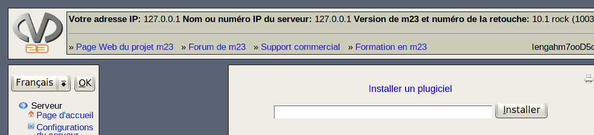

suivant:
The GNU General Public
monter:
Plugiciels
précédent:
Vue d'ensemble des plugiciels
Table des matières
Installer un plugiciel
Entrez le chemin au fichier plugiciel de m23. Vous pouvez utiliser les protocoles
HTTP
,
FTP
et des fichiers locaux. Ceci pourrait être un chemin valide:

http://m23.sf.net/testPlg.tb2
Puis, cliquez sur
Installer
.
dodger 2010-04-28